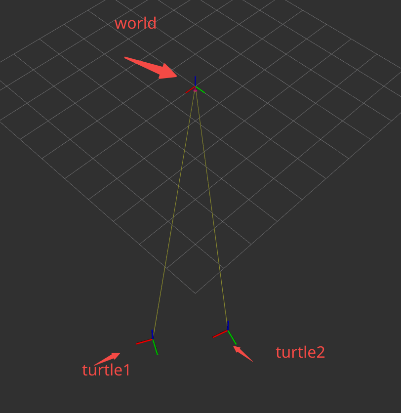
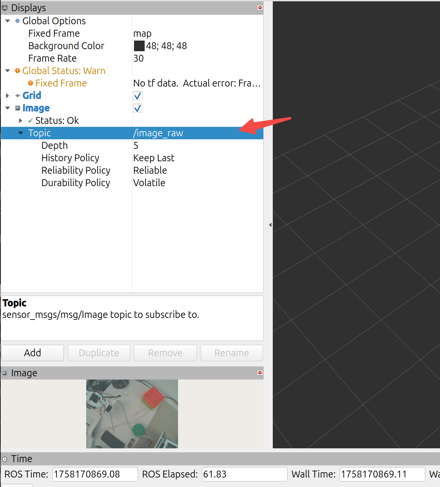

launch
在ROS2中，lauch是一个程序启动器，它的作用是一条命令可以启动多个节点，加载参数文件（YAML），重映射话题/服务/动作名称，条件启动（仿真/真机切换），嵌套调用其他launch文件。
lauch文件支持3种格式
| 格式 | 后缀 | 特点 | 推荐度 |
|---|---|---|---|
| Python | .launch.py |
功能最强，可写逻辑、条件，官方推荐 | ⭐⭐⭐⭐⭐ |
| XML | .launch.xml |
类似 ROS1，结构清晰，但灵活性差 | ⭐⭐ |
| YAML | .launch.yaml |
简洁配置，功能最弱 | ⭐ |
但在ROS2中目前更多的使用.launch.py。这里我们重点介绍此种方式。
launch文件结构
最小的结构示例
from launch import LaunchDescription
from launch_ros.actions import Node
def generate_launch_description():
return LaunchDescription([
Node(package='pkg_name', executable='exe_name', name='node_name')
])
创建launch文件需要导入launch和launch_ros模块，入口函数为generate_launch_description()，该函数中定义了要启动的节点，通过LaunchDescription来描述节点如包、执行程序、名称。
使用步骤
（1）创建一个包
cd ~/dev_ws/src
ros2 pkg create --build-type ament_python launch_demo
（2）新建launch目录
一般launch文件都会有个单独的目录，因此新建目录用于存放launch文件。
cd launch_demo
mkdir launch
（3）编写lauch文件
demo.launch.py
from launch import LaunchDescription
from launch_ros.actions import Node
def generate_launch_description():
return LaunchDescription([
Node(package='learn_topic_cpp', executable='topic_helloworld_pub', name='pub', output='screen'),
Node(package='learn_topic_cpp', executable='topic_helloworld_sub', name='sub', output='screen')
])
（4）修改setup.py
注册launch文件，主要是将.launch文件要拷贝到install/share/xxx/launch目录下。
from setuptools import find_packages, setup
import os
from glob import glob
......
data_files=[
(os.path.join('share', package_name, 'launch'), glob('launch/*.launch.py')),
]
.....
需要导入setuptools、os、glob这几个模块。
（5）编译&环境刷新
cd ~/dev_ws
colcon build
source install/setup.bash
（6）运行测试
ros2 launch launch_demo demo.launch.py
{kind=link}
进阶功能
（1）加载参数
config/params.yaml
my_node:
ros__parameters:
use_sim_time: true
max_speed: 2.0
launch 文件：
Node(
package='my_pkg',
executable='my_node',
parameters=['config/params.yaml']
)
（2）命令行参数
from launch.actions import DeclareLaunchArgument
from launch.substitutions import LaunchConfiguration
DeclareLaunchArgument('use_sim_time', default_value='false')
Node(
package='my_pkg',
executable='my_node',
parameters=[{'use_sim_time': LaunchConfiguration('use_sim_time')}]
)
在运行的时候可以传递参数
ros2 launch my_pkg demo.launch.py use_sim_time:=true
（3）条件启动
from launch.conditions import IfCondition
Node(
package='gazebo_ros',
executable='gzserver',
condition=IfCondition(LaunchConfiguration('use_gazebo'))
)
只有当条件use_gazebo满足时才会启动，如运行。
ros2 launch my_pkg demo.launch.py use_gazebo:=true
（4）话题重映射
Node(
package='my_pkg',
executable='controller',
remappings=[('/cmd_vel', '/robot1/cmd_vel')]
)
可以将节点中的话题进行重映射，如把节点内部用到的 /cmd_vel 改名为 /robot1/cmd_vel，在实际场景中多机器人系统可以避免冲突。
TF
TF是transform的缩写，其作用主要是维护并查询机器人系统中各个坐标系之间的关系（包括位置+姿态）。其主要的核心功能如下：
- 管理多个坐标系的父子关系（各个坐标系之间形成一颗TF树）
- 提供任意两个坐标系之间的变换（平移+旋转）
- 试试广播、查询坐标关系。
可以理解为TF就像是一个全局的时空字典，每个坐标系（Frame）都是字典里的key，而变化关系是key之间的link。
常见的坐标系有
- map：世界地图坐标系，一般是静态的，当机器人定位完成后，map是全局的参考。
- odom：里程计坐标系（相对），会随着时间推移会漂移。
- base_link：机器人本地中心，是所有传感器和控制指令的基准。
- camera_link：摄像头坐标系。
- laser_link：雷达坐标系。
典型的TF树
map → odom → base_link → camera_link
→ laser_link
每个坐标都有一个父坐标系（除了根map），变换是单项定义的。孙子的坐标系的位姿等于“父坐标系的位姿+子坐标系的相对位姿”。如上要知道map与camera_link的关系。则T_map_camera = T_map_odom × T_odom_base × T_base_camera
运行命令，查询 turtle2 坐标系相对于 turtle1 坐标系的变换关系。
ros2 run tf2_ros tf2_echo turtle2 turtle1
{kind=link}
打印数据如下：
At time 1758102120.301409314
- Translation: [3.679, -0.208, 0.000]
- Rotation: in Quaternion [0.000, 0.000, 0.003, 1.000]
- Rotation: in RPY (radian) [0.000, -0.000, 0.006]
- Rotation: in RPY (degree) [0.000, -0.000, 0.364]
- Matrix:
1.000 -0.006 0.000 3.679
0.006 1.000 0.000 -0.208
0.000 0.000 1.000 0.000
0.000 0.000 0.000 1.000
- Translation：平移，子坐标系的原点，相对于父坐标系的位置是x = 3.679 m,y = -0.208 m,z = 0 m。
- Quaternion：旋转，单位四元数。
- RPY ：欧拉角。
- Matrix：变换矩阵。
也可以使用rviz2来直观感受一下 
{kind=link}
广播与查询
举例一个场景机器人本体 base_link → 传感器 camera_link。
（1）广播父子坐标
import rclpy
from rclpy.node import Node
from geometry_msgs.msg import TransformStamped
from tf2_ros import TransformBroadcaster
import tf_transformations # 四元数工具
class FrameBroadcaster(Node):
def __init__(self):
super().__init__('frame_broadcaster')
self.broadcaster = TransformBroadcaster(self)
self.timer = self.create_timer(0.1, self.broadcast_tf) # 10Hz 发布
def broadcast_tf(self):
t = TransformStamped()
t.header.stamp = self.get_clock().now().to_msg()
t.header.frame_id = 'base_link' # 父坐标系
t.child_frame_id = 'camera_link' # 子坐标系
# 平移: 相机在机器人前方 0.2m，高 0.5m
t.transform.translation.x = 0.2
t.transform.translation.y = 0.0
t.transform.translation.z = 0.5
# 旋转: 无旋转
q = tf_transformations.quaternion_from_euler(0, 0, 0)
t.transform.rotation.x = q[0]
t.transform.rotation.y = q[1]
t.transform.rotation.z = q[2]
t.transform.rotation.w = q[3]
self.broadcaster.sendTransform(t)
def main():
rclpy.init()
node = FrameBroadcaster()
rclpy.spin(node)
if __name__ == '__main__':
main()
调用TransformBroadcaster用于广播坐标变换父->子。
（2）查询坐标
import rclpy
from rclpy.node import Node
from tf2_ros import Buffer, TransformListener
class FrameListener(Node):
def __init__(self):
super().__init__('frame_listener')
self.tf_buffer = Buffer()
self.listener = TransformListener(self.tf_buffer, self)
self.timer = self.create_timer(1.0, self.lookup_tf)
def lookup_tf(self):
try:
# 查询 base_link 在 map 下的变换
trans = self.tf_buffer.lookup_transform(
'map', # 父坐标系
'base_link', # 子坐标系
rclpy.time.Time())
t = trans.transform.translation
r = trans.transform.rotation
self.get_logger().info(
f"位置: x={t.x:.2f}, y={t.y:.2f}, z={t.z:.2f}; "
f"四元数: [{r.x:.3f}, {r.y:.3f}, {r.z:.3f}, {r.w:.3f}]"
)
except Exception as e:
self.get_logger().warn(f"查询失败: {e}")
def main():
rclpy.init()
node = FrameListener()
rclpy.spin(node)
if __name__ == '__main__':
main()
调用TransformListener + Buffer查询坐标，打印如下：
位置: x=3.68, y=-0.21, z=0.00; 四元数: [0.000, 0.000, 0.003, 1.000]
也可以用命令行：
ros2 run tf2_ros tf2_echo base_link camera_link
Gazebo
安装
sudo apt-get update
sudo apt-get install lsb-release gnupg
sudo curl https://packages.osrfoundation.org/gazebo.gpg --output /usr/share/keyrings/pkgs-osrf-archive-keyring.gpg
echo "deb [arch=$(dpkg --print-architecture) signed-by=/usr/share/keyrings/pkgs-osrf-archive-keyring.gpg] https://packages.osrfoundation.org/gazebo/ubuntu-stable $(lsb_release -cs) main" | sudo tee /etc/apt/sources.list.d/gazebo-stable.list > /dev/null
sudo apt-get update
sudo apt install gz-harmonic
sudo apt install ros-jazzy-ros-gz
详情参考Binary Installation on Ubuntu。
安装完成后，启动下面命令正常启动就说明安装好了。
gz sim
机器仿真示例
启动一个机器仿真环境
ros2 launch ros_gz_sim_demos diff_drive.launch.py
启动一个键盘控制节点
ros2 run teleop_twist_keyboard teleop_twist_keyboard --ros-args -r cmd_vel:=model/vehicle_blue/cmd_vel
使用i/j/,/l四个按键可以控制机器人前后左右动作。
{kind=link}
传感器示例
ros2 launch ros_gz_sim_demos rgbd_camera_bridge.launch.py
仿真摄像头，运行上面命令后会打开Gazebo仿真界面和RViz上位机。可以在Gazebo中直接看到RGBD相机仿真后发布的图像数据。
{kind=link}
RViz
RViz 全称 ROS Visualization，是 ROS（Robot Operating System）里一个非常重要的三维可视化工具。它的作用主要是帮助开发者 直观地查看机器人系统中的数据和状态。
RViz的作用主要有坐标系可视化、传感器数据展示、机器人模型显示、路径与轨迹可视化、调试与验证等等。
RViz的核心功能模块主要有Displays、Views、Tools、Topics订阅。
RViz只负责可视化（接受数据显示）不会进行物理仿真，而Gazebo是物理仿真器，可以模拟机器人运动、环境交互。常用的做法是Gazebo负责仿真将数据发布到ROS 然后通过RViz显示数据。
RViz已经集成到完整版的ROS中，一般不需要额外单独安装。
ros2 run rviz2 rviz2
{kind=link}
示例：tf数据可视化
分别启动两个终端，运行海龟跟随运动。
ros2 launch learning_tf turtle_following_demo.launch.py
ros2 run turtlesim turtle_teleop_key
接着运行rviz2
ros2 run rviz2 rviz2
添加TF
{kind=link}
坐标系显示
{kind=link}
示例：图像数据可视化
ros2 run usb_cam usb_cam_node_exe
执行启动相机驱动，如果找不到命令就先安装sudo apt install ros-jazzy-usb-cam
{kind=link}
按照上面的方式添加image，如果报错
{kind=link}
需要把topic订阅改为/image_raw 
{kind=link}
rosbag
rosbag 是 ROS（Robot Operating System）中的一种数据记录与回放工具，用来保存和重放机器人运行时产生的各种消息数据。简单来说，它就像“黑匣子”，能把机器人运行时的传感器、话题消息、控制指令等全部记录下来，方便后期调试和复现实验。
记录数据
先启动"老演员"
ros2 run turtlesim turtlesim_node
ros2 run turtlesim turtle_teleop_key
然后创建一个文件夹用于存放录制数据
mkdir ~/bagfiles
cd ~/bagfiles/
列出当前有哪些话题
ros2 topic list -v
Published topics:
* /parameter_events [rcl_interfaces/msg/ParameterEvent] 3 publishers
* /rosout [rcl_interfaces/msg/Log] 3 publishers
* /turtle1/cmd_vel [geometry_msgs/msg/Twist] 1 publisher
* /turtle1/color_sensor [turtlesim/msg/Color] 1 publisher
* /turtle1/pose [turtlesim/msg/Pose] 1 publisher
Subscribed topics:
* /parameter_events [rcl_interfaces/msg/ParameterEvent] 3 subscribers
* /turtle1/cmd_vel [geometry_msgs/msg/Twist] 1 subscriber
接下来就记录/turtle1/cmd_vel话题。
ros2 bag record /turtle1/cmd_vel
这样只要在键盘终端控制海龟不断移动，就可以记录下数据了。停止记录Ctrl+C。
laumy@ThinkBook-14-G7-IAH:~/bagfiles$ tree
.
└── rosbag2_2025_09_18-12_52_52
├── metadata.yaml
└── rosbag2_2025_09_18-12_52_52_0.mcap
2 directories, 2 files
回放数据
可以使用下面命令查看数据文件信息。
laumy@ThinkBook-14-G7-IAH:~/bagfiles$ ros2 bag info rosbag2_2025_09_18-13_01_53/
Files: rosbag2_2025_09_18-13_01_53_0.mcap
Bag size: 29.8 KiB
Storage id: mcap
ROS Distro: jazzy
Duration: 26.796084773s
Start: Sep 18 2025 13:01:58.126984611 (1758171718.126984611)
End: Sep 18 2025 13:02:24.923069384 (1758171744.923069384)
Messages: 251
Topic information: Topic: /turtle1/cmd_vel | Type: geometry_msgs/msg/Twist | Count: 251 | Serialization Format: cdr
Service: 0
Service information:
回放命令：
ros2 bag play rosbag2_2025_09_18-13_01_53/
这样海龟就会复制刚才键盘执行的运动路径。
{kind=link}
rqt
rqt 是 ROS 官方提供的一个基于 Qt 的 GUI 框架，本质上是一个 插件管理和可视化平台。
它的设计理念是：ROS 系统是分布式的，节点、话题、服务、参数等很多，调试和监控光靠命令行不直观，因此需要一个统一的 图形化工具箱 来观察和操作。
使用如下命令来安装
sudo apt install ros-jazzy-rqt
安装完成之后，执行
rqt
{kind=link}
rqt默认是没有选择任何插件。要添加插件，需要从插件菜单中选择项目。
日志显示
日志显示有两种打开方式一种是执行rqt后，在Plugins->Logging->Console-打开，另外一种是执行下面命令
ros2 run rqt_console rqt_console
{kind=link}
图像显示
在启动之前先运行usb
ros2 run usb_cam usb_cam_node_exe
UI界面启动"Plugins->Visualization>Image View"或者通过命令的方式：
ros2 run rqt_image_view rqt_image_view
接着添加订阅的话题
{kind=link}
发布话题/服务数据
不仅可以在命令行中发布话题或服务，也可以通过rqt工具发布。
先启动turtlesim
ros2 run turtlesim turtlesim_node
然后使用rqt的"Plugin->Topics->MessagePublish"。
{kind=link}
绘制数据曲线
rqt还可以绘制数据曲线，将需要显示的xy坐标使用曲线描述出来，便于体现机器人的速度、位置等信息随时间变化的趋势。
"Plugins->Visualization>plot"
{kind=link}
然后依次添加topic，就可以记录轨迹了。
节点可视化
打开“introspection->Node Graph”可以看到系统中所有的节点关系。
{kind=link}
附录：本文来自《ROS2智能机器人开发实践》笔记